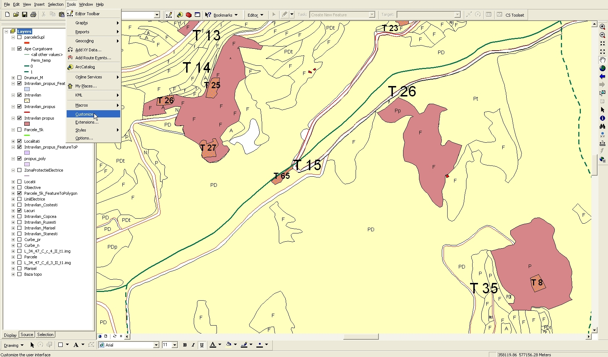
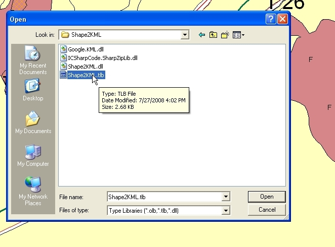
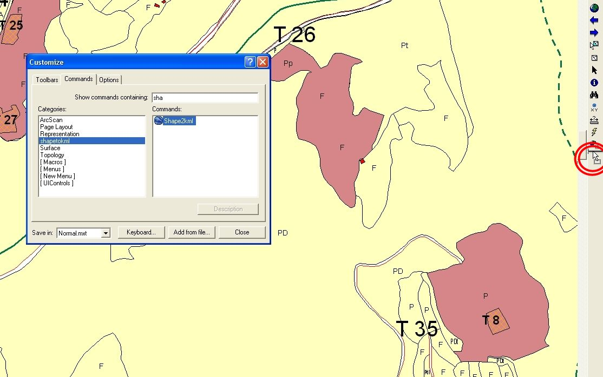
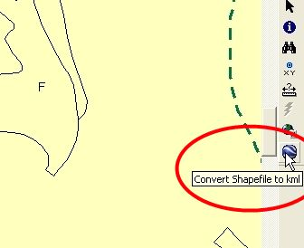
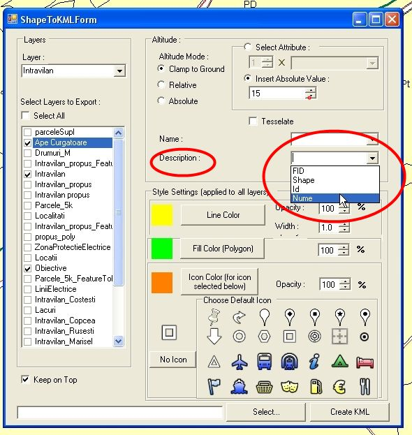
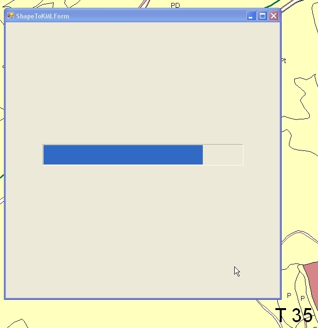
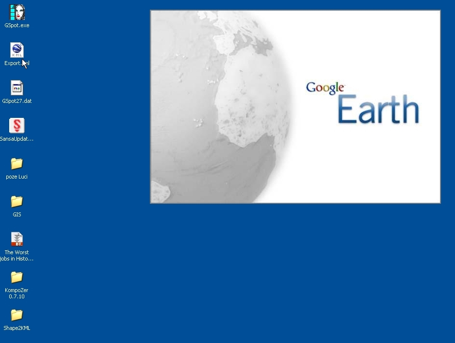
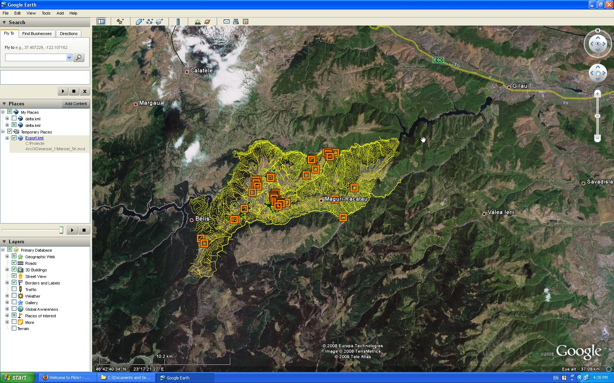

Shape2KML Creator usage tips
Shape2KML
Creator is an ArcMap command used for exporting shapefiles from ArcMap
to a kml document that can be viewed with Google Earth or a lot of
other programs.
This document will present the usage of this command to export your data from a ArcMap map to a KML document.
1. Installing the command.
To install the command and add it to a toolbar you must do this:
-open the ArcMap Application
-Click Tools> Customize

- go to the Commands Tab
-Click "Add from file"

-browse to the Location of the Shape2KML library
-click on the Shape2KML.TLB file and click "Open" , or double click the TLB file

-the shape2KML command should apear in the command list.
-ArcGIS should automatically highlight the command, or you can use the search feature to find it.
-Just type shape in the search field above the list

-drag and drop the command to any toolbar

-the command apears on the toolbar
2. Starting the program
-To start the program, click the button on the toolbar. a tip will appear to tell you what the button does.

-after clicking the button, the main form will appear.
The form looks like this, and has the following components:

Selected Layer is the layer for which you are currently setting the properties.
The layers list presents the list of layers that can be exported.
You can either select all layers by clicking the "Select All" button or select just the layers you need.
The name of the layer shown in tha layers list is the same as the name ahown in ArcMap.
The KML file location is the location where the KMl file will be saved.
You can change this location by pasting a new locaton in the box or you
can browse to the location by clicking the "Select..." button
The
Altitude, name and description selection is different for each selected
layer. Change the selected layer in tha combo in the left of the form
to activate these options.
You can select the following altitude modes (if available):
-clamp to ground, to place the feature directly on the ground
-absolute, to place the feature at an absolute
level. This can be taken from a value field in the Attribute table or
inserted manually.
-relative,
to place the feature relative to ground level. Tha same as above, you
can get the value from a field or insert it manually.
The Style
selection allows you to set properties for the way features will be
shown in Google Earth. Currentl;y, there is only one style for the
entire KML, so the features will look the same even if they are from
different layers.
The style selection permits
choosing the color for lines or icons, the fill for the polygons and
the icon you wish to use for the points from a list of preset icons.
Finally, after setting the options, the Create KML button will create the document at the specified location.
3.Setting the options
This presents the list of options you can set for the KML document, in random order.
Clicking on one of the color buttons opens a color selection dialog to choose the color for the features of that type:

Clicking
on one of the icons will change the icon for all the points exported.
The icon used will have the Icon color you choose.

Selecting a layer from the left combo allows you to set the properties for the layer.

You can choose where to get the altitude of the features from (either an absolute value or a value from a field).


You can choose the field to use for the name of the feature.
You can choose the field to use for the description of the feature.
Values for these fields will be taken directly from the Attribute table.

4.Export the file
Exporting the file is simple. First, you choose the path to the file by clickingthe "Select" button:

After selecting the correct path, click "Create KML" to create the document.

While creating the KMl, you are shown the progress of the operation:

5. Use the file
If you have Google Earth or another KML browser installed, just double click the created file:

The opened file should be in the correct location and use the settings you choose for it:

If
altitude is correct , the features should appear correctly. For
example, the height for the lines in this picture was taken from the
attribute table.
After enabling the Terrain Layer in Google Earth, you can see that the lines are at the correct altitude and location.

The exported file will separate the layers from arcGIS in different KMl folders, so you can enable them as you wish.
For ideas and suggestions, contact me at mdomnita@gmail.com .